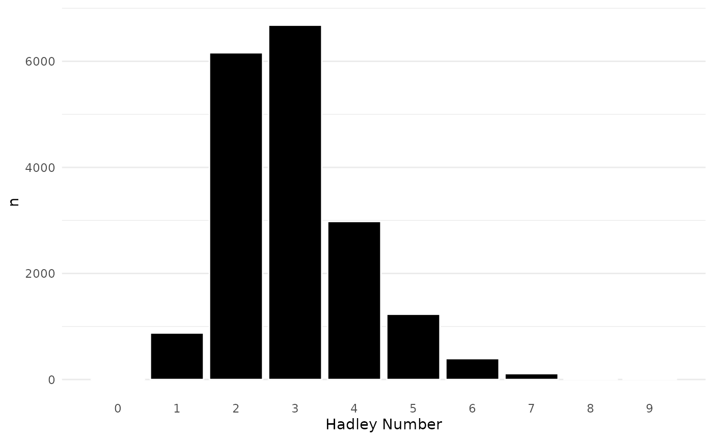

Replication of David Schoch's blog post 'Six degrees of Hadley Wickham: The CRAN co-authorship network'
Source:vignettes/articles/six-degrees-replication.Rmd
six-degrees-replication.RmdThis article aims to replicate David Schoch’s analysis in his blog
post “Six
degrees of Hadley Wickham: The CRAN co-authorship network” using the
authoritative package.
library(authoritative)
library(tidyverse)
#> ── Attaching core tidyverse packages ──────────────────────── tidyverse 2.0.0 ──
#> ✔ dplyr 1.1.4 ✔ readr 2.1.5
#> ✔ forcats 1.0.0 ✔ stringr 1.5.1
#> ✔ ggplot2 3.5.1 ✔ tibble 3.2.1
#> ✔ lubridate 1.9.4 ✔ tidyr 1.3.1
#> ✔ purrr 1.0.2
#> ── Conflicts ────────────────────────────────────────── tidyverse_conflicts() ──
#> ✖ dplyr::filter() masks stats::filter()
#> ✖ dplyr::lag() masks stats::lag()
#> ℹ Use the conflicted package (<http://conflicted.r-lib.org/>) to force all conflicts to become errors
library(igraph)
#>
#> Attaching package: 'igraph'
#>
#> The following objects are masked from 'package:lubridate':
#>
#> %--%, union
#>
#> The following objects are masked from 'package:dplyr':
#>
#> as_data_frame, groups, union
#>
#> The following objects are masked from 'package:purrr':
#>
#> compose, simplify
#>
#> The following object is masked from 'package:tidyr':
#>
#> crossing
#>
#> The following object is masked from 'package:tibble':
#>
#> as_data_frame
#>
#> The following objects are masked from 'package:stats':
#>
#> decompose, spectrum
#>
#> The following object is masked from 'package:base':
#>
#> union
library(netUtils)
db <- tools::CRAN_package_db()
author_pkg_cran <- db |>
dplyr::transmute(
Package = Package,
parsed_authors_r = purrr::map(authoritative::parse_authors_r(`Authors@R`), format, include = c("given", "family")),
parsed_authors = authoritative::parse_authors(Author)
) |>
dplyr::mutate(
authorsR = coalesce(parsed_authors_r, parsed_authors),
authorsR = map(authorsR, stringi::stri_trans_general, "ASCII"),
authorsR = map(authorsR, stringr::str_replace_all, "[[:punct:]]", " "),
authorsR = map(authorsR, stringr::str_replace_all, "[[:space:]]+", " "),
authorsR = map(authorsR, trimws),
.keep = "unused"
) |>
tidyr::unnest_longer(authorsR) |>
dplyr::mutate(authorsR = authoritative::expand_names(authorsR, authorsR)) |>
# Standardize capitalization
dplyr::mutate(
authorsR = stringr::str_to_title(authorsR)
)
# FIXME: these signal an problem in the parsing. So this should be fixed instead of dropping the values
author_pkg_cran <- author_pkg_cran |>
filter(!authorsR %in% Package)
author_pkg_cran_net <- netUtils::bipartite_from_data_frame(author_pkg_cran, "authorsR", "Package")
A <- as_biadjacency_matrix(author_pkg_cran_net, sparse = TRUE)
A <- as(A, "sparseMatrix")
B <- Matrix::t(A) %*% A
auth_auth_net <- graph_from_adjacency_matrix(B, "undirected", diag = FALSE, weighted = TRUE)
auth_auth_net
#> IGRAPH 53a9101 UNW- 27423 152973 --
#> + attr: name (v/c), weight (e/n)
#> + edges from 53a9101 (vertex names):
#> [1] Martin Bladt --Christian Furrer
#> [2] Martin Bladt --Alexander J Mcneil
#> [3] Martin Bladt --Jorge Yslas
#> [4] Martin Bladt --Alaric Muller
#> [5] Sigbert Klinke --Jaroslav Myslivec
#> [6] Sigbert Klinke --Robert King
#> [7] Sigbert Klinke --Benjamin Dean
#> [8] Sigbert Klinke --Paul Van Staden
#> + ... omitted several edges
comps_cran <- components(auth_auth_net)
comps_cran$no
#> [1] 4108
auth_auth_net_largest <- largest_component(auth_auth_net)
auth_auth_net_largest
#> IGRAPH 8b813db UNW- 16912 137374 --
#> + attr: name (v/c), weight (e/n)
#> + edges from 8b813db (vertex names):
#> [1] Martin Bladt --Christian Furrer Martin Bladt --Alexander J Mcneil
#> [3] Martin Bladt --Jorge Yslas Martin Bladt --Alaric Muller
#> [5] Sigbert Klinke--Jaroslav Myslivec Sigbert Klinke--Robert King
#> [7] Sigbert Klinke--Benjamin Dean Sigbert Klinke--Paul Van Staden
#> [9] Sigbert Klinke--Jekaterina Zukovska Sigbert Klinke--Frederic D Chevalier
#> [11] Wenjie Wang --Eli Lilly And Company Wenjie Wang --Jun Yan
#> [13] Wenjie Wang --Yujing Jiang Wenjie Wang --Mei Ling Ting Lee
#> [15] Wenjie Wang --Yan Li Wenjie Wang --Kun Chen
#> + ... omitted several edgesFrom the 27,423 recorded package authors, 16,912 (61.67%) are part of the largest connected component. All subsequent analyses will be done with this network.
emax_who <- ends(auth_auth_net_largest, E(auth_auth_net_largest)[which.max(E(auth_auth_net_largest)$weight)])[1, ]
emax <- max(E(auth_auth_net_largest)$weight)On average, every developer in the largest component has 16.25 co-authors. The median is 7. The two individuals who coauthored the most packages together (62), are Posit Software Pbc and Hadley Wickham. The person with the most co-authors (872) is Hadley Wickham. What a great transition for the next section.
hadley_idx <- which(V(auth_auth_net_largest)$name == "Hadley Wickham")
author_tbl <- tibble(
name = V(auth_auth_net_largest)$name,
dist2HW = distances(auth_auth_net_largest, to = hadley_idx, weights = NA),
cc = (1 / closeness(auth_auth_net_largest, weights = NA)) * 1 / vcount(auth_auth_net_largest)
)
author_tbl |>
count(dist2HW) |>
ggplot(aes(x = dist2HW, y = n)) +
geom_col(color = "white", fill = "black") +
theme_minimal() +
theme(
panel.grid.major.x = element_blank(),
panel.grid.minor.x = element_blank(),
) +
scale_x_continuous(breaks = seq(0, 10), name = "Hadley Number")
author_tbl |>
select(name, centrality = cc) |>
dplyr::top_n(10, -centrality) |>
dplyr::arrange(centrality) |>
knitr::kable()| name | centrality |
|---|---|
| Hadley Wickham | 2.929340 |
| Dirk Eddelbuettel | 3.063801 |
| Ben Bolker | 3.072789 |
| Posit Software Pbc | 3.087748 |
| Jim Hester | 3.120033 |
| Romain Francois | 3.131859 |
| Martin Maechler | 3.136353 |
| Kevin Ushey | 3.141320 |
| Brian D Ripley | 3.175378 |
| Henrik Bengtsson | 3.183184 |